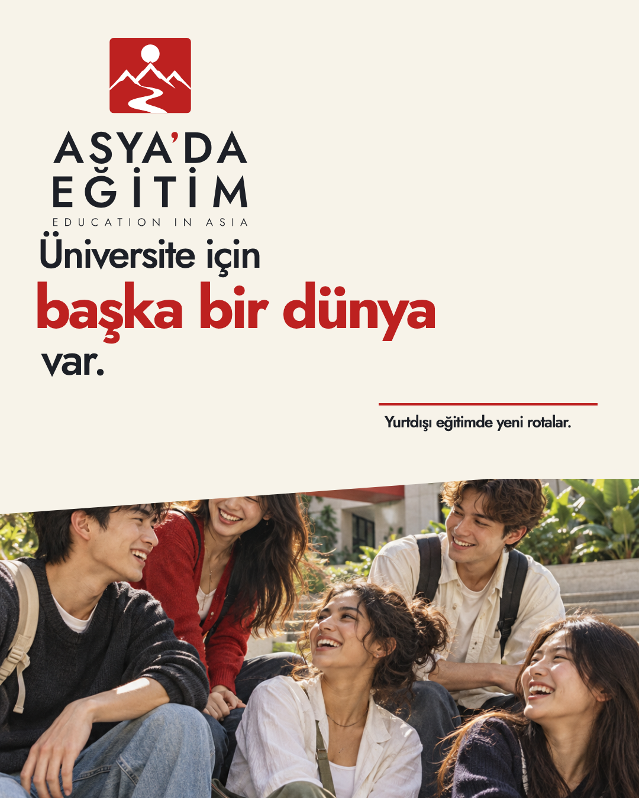
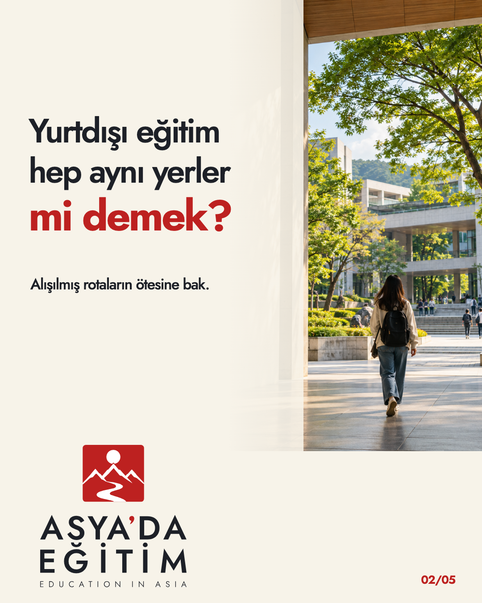
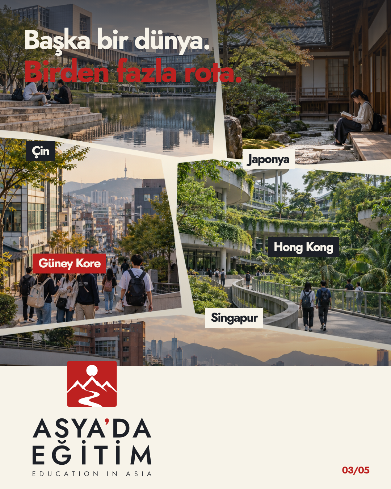
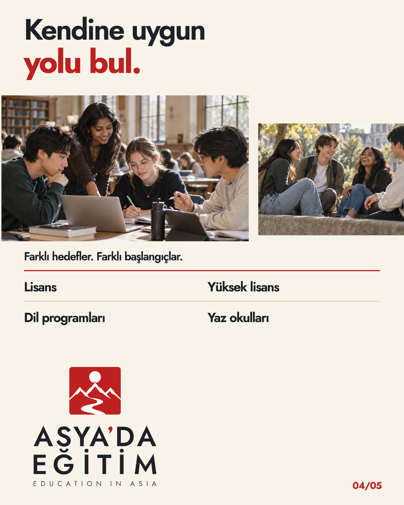
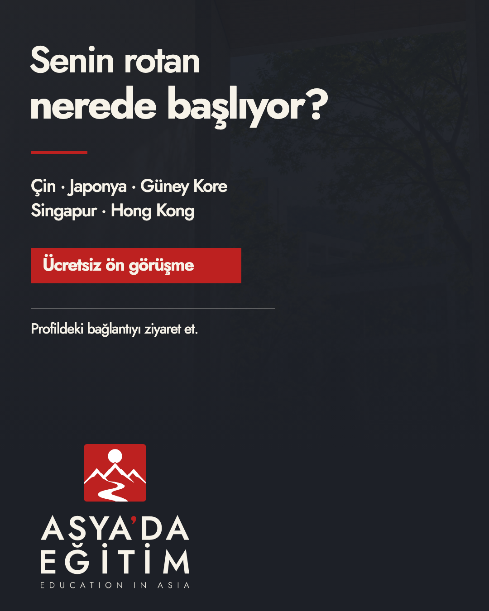

● ○ ○ ○ ○
1 / 5
♡ ♧ ↗
asyadaegitim Üniversite için başka bir dünya var.Yurtdışı eğitimde yeni rotalar.
ASYA’DA EĞİTİM · KAMPANYA AÇILIŞI · TASARIM V2
Önceki tasarım sunum sayfası gibiydi. Bu revizyonda ana P-01 kilidi her slaytta aynı gerçek oran ve ölçekte imza oluyor; kapak artık profil ızgarasında, devamı ise gerçek gönderi oranında carousel olarak simüle ediliyor. Bu, Instagram arayüzünün yaklaşık bir tasarım maketidir; platform görüntüsü değildir.


İlk slayt, markalı P-01 imzasıyla küçük profil karesinde de deneniyor.
Görseller yapay zekâ ile üretilmiş atmosferik konsept fotoğraflardır; gerçek bir üniversite kampüsünü belgeledikleri iddia edilmez.



